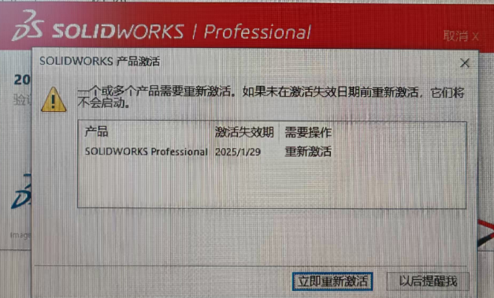
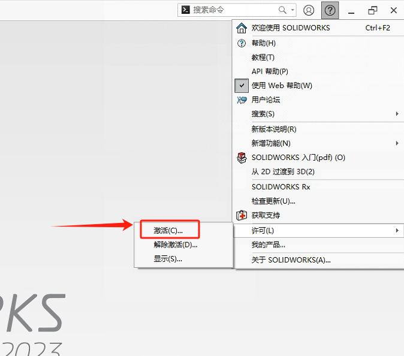
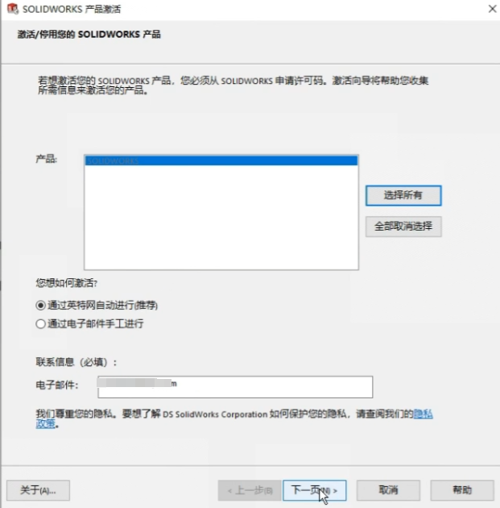
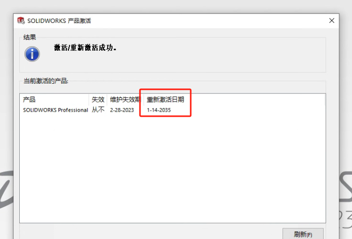

许可再激活
服务器上从 2022 版本开始的许可也需要每年重新激活一次。在重新激活日期后的 30 天内，网络上的 SOLIDWORKS 产品会通知用户：“许可将于30天后过期”。重新激活操作如下：
网络版
1、 单击【开始/菜单 > SOLIDWORKS 工具20xx > SolidNetWork License Manager Server】启动服务器许可程序
2、 在服务器管理选项卡的许可信息下，单击【再激活】。

3、 在序列中，为所有许可选择全部，或输入许可号以搜索特定许可，单击重新激活（之后的操作就和正常激活是一样的流程）。

备注：
- 日期红色显示 30 天内的所有许可到期和重新激活日期。
- 产品名带（星号*）标记需要续订的许可证
单机版
从SW程序界面的【许可-激活】启动激活界面。
点击“下一步”激活（这里需要电脑连接网络才行）
激活后会显示新的“重新激活日期”。
